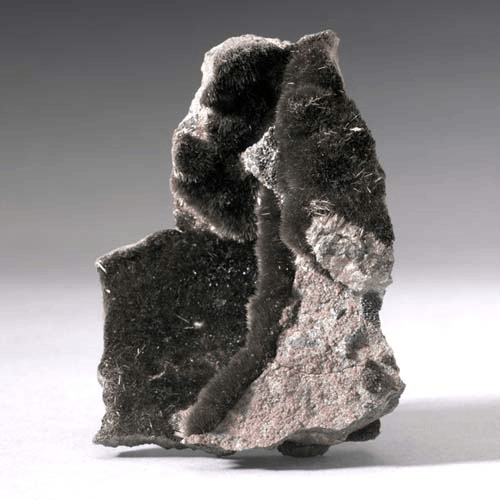
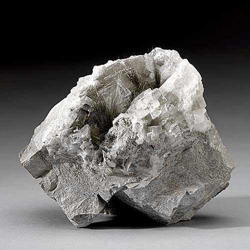

Millerite - NiS
Sulfides



Habit: Needle-like crystals in radiating masses, also massive common, brass-yellow with an iridescent tarnish. Metallic Luster, opaque
Environment: Low temperature mineral, often in cavities in limestone and dolomite or an alteration product of other nickel minerals
Etymology: For William H. Miller (1801-1880), English mineralogist who first described the mineral